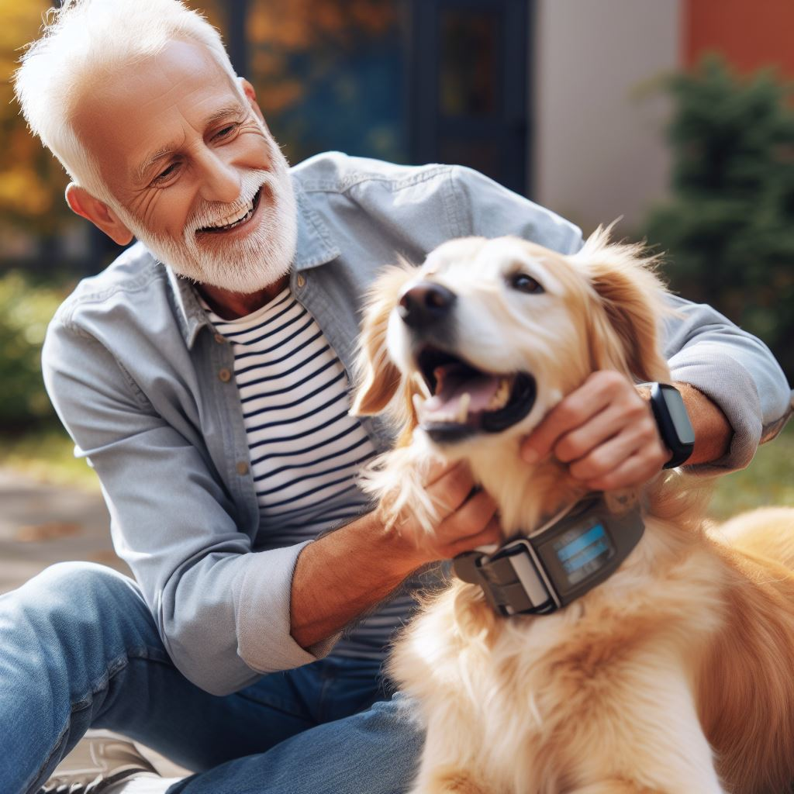

Robotic Solutions
I build intelligent robotic and automation systems that streamline workflows and modernise legacy equipment for factories and small businesses.
Learn moreI’m Jordan Destafino — a founder and student who cut his teeth on neurobiology and electrical engineering. Today I build custom robotics and automation systems for factories and small businesses while still chasing the wild dream of talking dogs. Alongside the serious tech, you’ll find me creating slightly-whimsical robotics and technical projects that fund the journey.

I grew up in North Carolina and attended High Point University for four years. My studies in neuroscience, microcontrollers and machine learning set the foundation for Stone Technologies, a holdings company where I develop technologies that support my long‑term goal of canine communication.
These days my focus is on designing intelligent robotic and automation solutions for small businesses and factories, exploring materials engineering and synthetic biology as a post-bac in grad school, and teaching my dogs to play Uno. I’m still a student, eager to learn from anyone who can show me a better way.
Read my storyFrom robotics to practical chemistry, here’s how I spend my time.
I build intelligent robotic and automation systems that streamline workflows and modernise legacy equipment for factories and small businesses.
Learn moreProjects like teaching my dogs to play Uno and inventing an instant casting material show how curiosity and fun drive real innovation. Most of my designs are open‑source.
Browse experimentsSupport the mission with merch. Custom T‑shirts and other goodies help fund research and keep the lights on in my workshop.
Shop nowWhat I’ve been up to recently.
After almost a year of development, I decided to pause the brain scanner project in January 2025. The experience sharpened my engineering chops and inspired new directions — but for now it’s on the shelf while I focus on robotics and systems.
I’ve been busy designing automation systems for local businesses and teaching my dogs the rules of Uno (with help from a custom card reader). Stay tuned as I develop more quirky prototypes and prepare to launch some merch.
Lining up designs, suppliers, and logistics for the Stone Store launch. Expect limited-run tees and maker gear that supports R&D.
Prototyping a compact robot cell with a lightweight vision stack to modernize a legacy line. Early results look promising.
“Jordan is the rare mix of playful creativity and technical rigor. He built exactly what I needed and then some.” — Happy Client
“Just a guy trying to talk to his dog—and inspiring others along the way.” — Follower